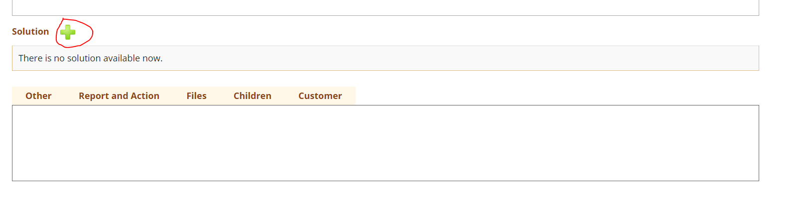
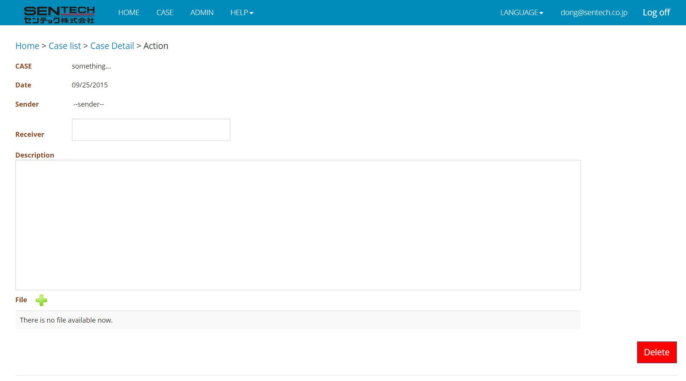

After clicking the plus mark beside Solution will go to add solution page:

The adding a new solution page:

Below the sitemap are:
- CASE: The description of the related case, cannot be changed.
- Date: The date when this solution is created, cannot be changed.
- Sender: The member who creates this solution
- Receiver: The receiver who this solution is applied for
- Description: The description of this solution
- File: the related file, when click “plus” mark, will go to adding a new file page
- Delete: If a user wants to delete this solution, just click this button and confirm the pop up alert.
After fill in the information of each field, the information will be automatically saved into database.